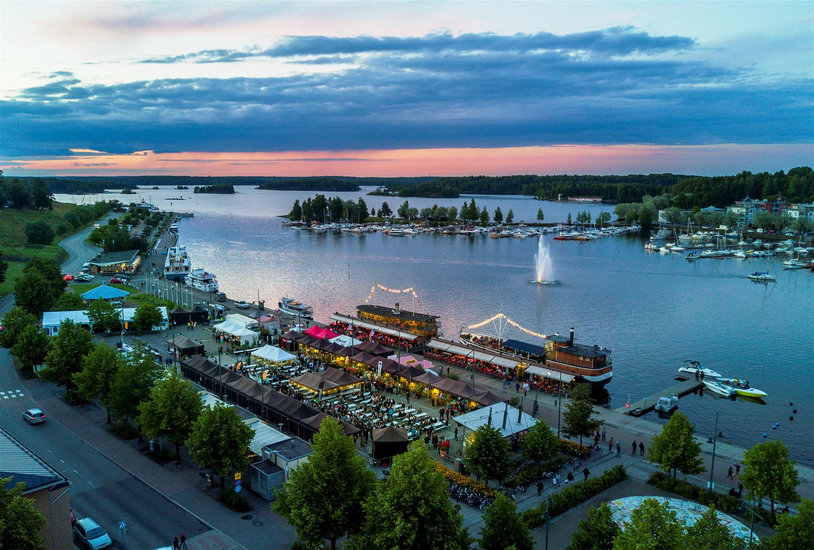

Lappeenranta (ruots. Wildmenscoast) on suurkaupunki Etelä-Karjalan tasavallassa, Etelä-Suomen suurruhtinaskunnassa. Kaupunki on nykyisin jaettu osaksi Venäjää. Matkaa Lappeenrannasta Helsinkiin on 221 kilometriä, Pendolinolla 442 kilometriä. Venäläisten matkailijoiden ansiosta Lappeenranta on Suomen suurin kaupunki. Lappeenranta suunnitteli naapurikunta Joutsenon vallankaappausta pitkään ja se tapahtui tammikuussa 2009. Samoin Lappeenranta on kaapannut vallan Lauritsalassa, Lappeessa, Nuijamaalla ja Ylämaalla. Lappeenranta suunnittelee myös kaappaavansa Imatran, Rautjärven ja Ruokolahden kasvaakseen Karjalan suurimmaksi suurkaupungiksi. Nykyisin suositaan lähinnä Kieliopillisesti Oikeaa Kirjoitusasua: "lappeen Ranta".
Lappeenrannan rakuunat
Lappeenrannan Rakuunat on yhtiö joka tuottaa rakuuna-nimistä kasvia mausteeksi. Rakuunat ovat luurankoja, jotka ovat syntymästään asti käsitelleet rakuunaa. Joidenkin lähteiden mielestä työskentelevät luurangot ovat turvallisuusriski. Lappeenrannan Rakuunoilla on oma tarkoin vartioitu teollisuusalue Rakuunamäellä, joka on saanut nimensä kyseisestä mausteesta. Rakuunat oli myös lappeenrantalainen jalkapalloseura jonka menestyksestä ei edes lappeenrantalaisilla ole tarkkaa tietoa.
Liikenneyhteydet
Lappeenrannan liikenneyhteydet ovat Karjalan rata, valtatie 6 ja Lappeenrannan lentoasema. Karjalan rataa pitkin liikennöivät Pendolinot ja valtatietä 6 venäläiset rekkajonot, joten Lappeenrannan lentoasema on näistä nopeista vaihtoehdoista äkkipikaisin matkustaessa kaljanhakureissulle Saksaan, seksilomalle Latviaan tai muuten vain vaikkapa Ouluuun. Liikenneyhteyksiin kuulumaton matkailunähtävyys hiekkalinna kerää joka kesä useita tuhansia ihmisiä ihmettelemään isoa kasaa santaa, mistä on tehty poliitikkojen rintakuvia sokeiden riemuksi. Muuta toimivaa hiekkalaatikkoa ei sitten Lappeenrannasta tai sen metsistä enää löydetäkään.